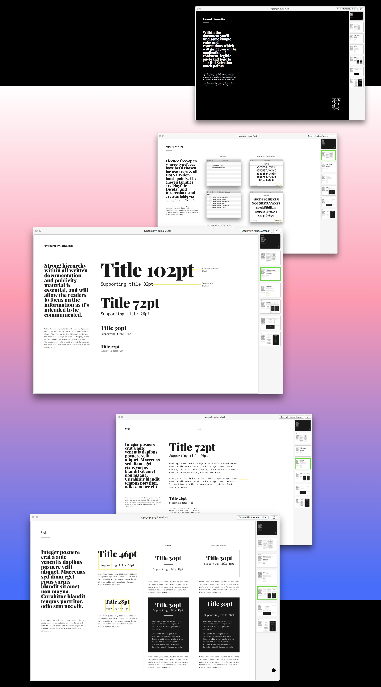
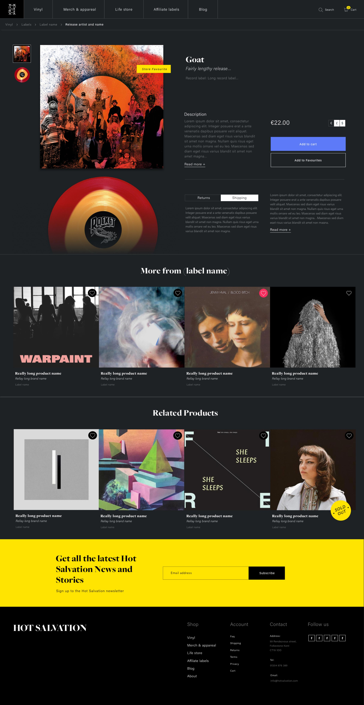
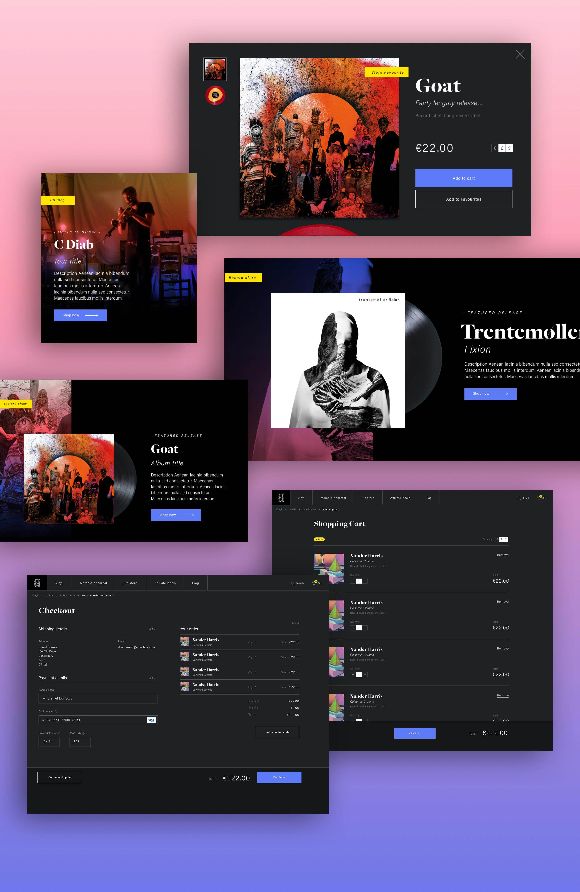
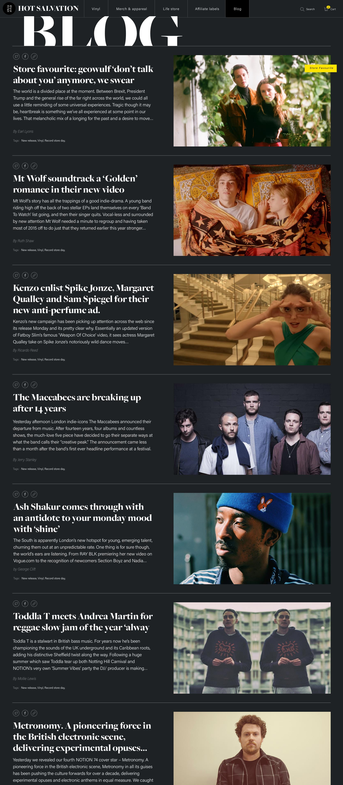

E-commerce, blog and identity design
Design & Art Direction
Hot Salvation

Hot Salvation Records is an independent vinyl-only record store and label based in Folkestone, Kent. Their love for vinyl and belief in an re-emerging format has made the store a success.
I worked with the owners to create and identity that carries their vision forward.
A shortlist of four brand marks were shortlisted, all using the Hot Salvation Initials to form a monogram of interlocking characters.
A mark with good contrast between characters was chosen and a circular band added to build on a vinyl metaphor.
Bold, bottom heavy type treatment allowing for good legibility.
Both monogram and logotype can be used together or separated out. Rules were established to how and when this can be done.
A typography guide was created, written in non-designer language with easy understandable how-to guides for implementing the typographic rules. This included advice on setting line height and paragraph spacing, Installing fonts on the store's machines, understanding the use of contrast and setting hierarchy.
Ultimately providing this information has allowed store staff to design social posts and store signage at minimum cost and ensuring that all touchpoints are consistent with the brand.





